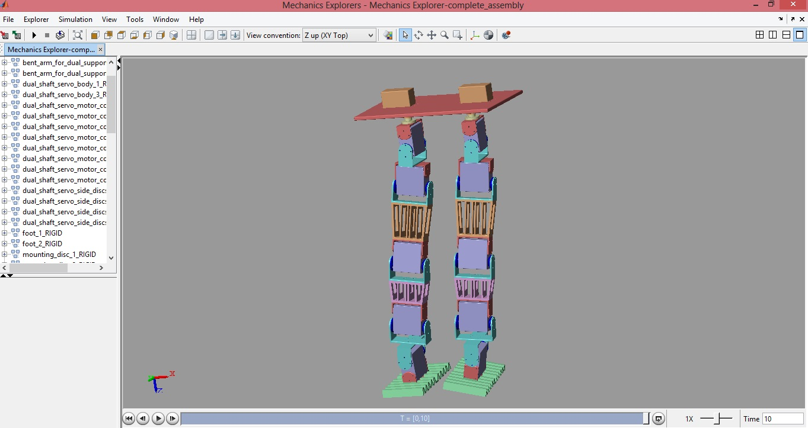
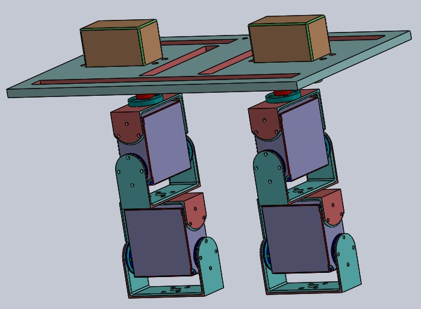
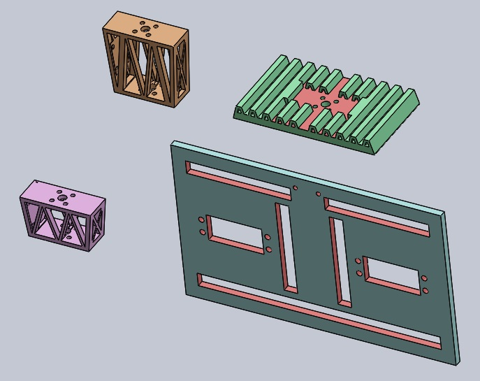
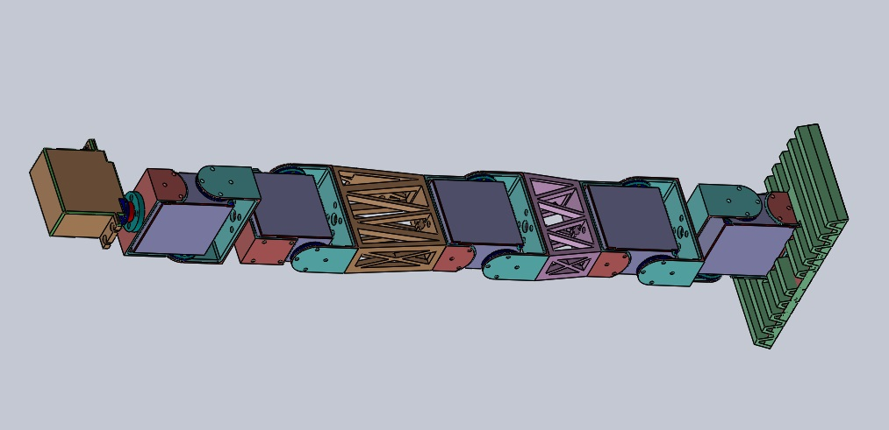

JULY 2016 - PRESENT | ZINE LAB | MNIT JAIPUR
OBJECTIVE
Building a 12-dof lower body biped robot with the ability of teleoperation as a human gait follower
METHODOLOGY
This biped robot is a flat foot biped designed for bent knee walking analogous to the Honda made ASIMO. The primary objective is to create the model that resembles the weight distribution of human beings. Moreover, the actuators selected are servo motors whose internal circuitry is modified to avail two level closed loop system in motor's position controlled movement. The complete model of the biped was designed on a 3D designing platform. It has 3D printed parts of the biped - the shin, thigh, foot and the waist. The characterisitics of the biped are:
• Foot, hip and knee trajectory is estimated using the cubic spline interpolation technique
• ABS plastic material used in manufacturing of the various parts
• The robot's orientation and joint angles are determined by finding the relative angle between the various links. IMU sensors are used to find the orientation of the individual links
RESULTS
• Design and fabrication of the robot has been completed
• First stage of joint manipulation for the various joints of the immobile robot has been implemented. Implementation of control schemes for successive joint actuation is underway
• Joint angle prediction using data fusion techniques on IMU sensors has been achieved
GALLERY
   